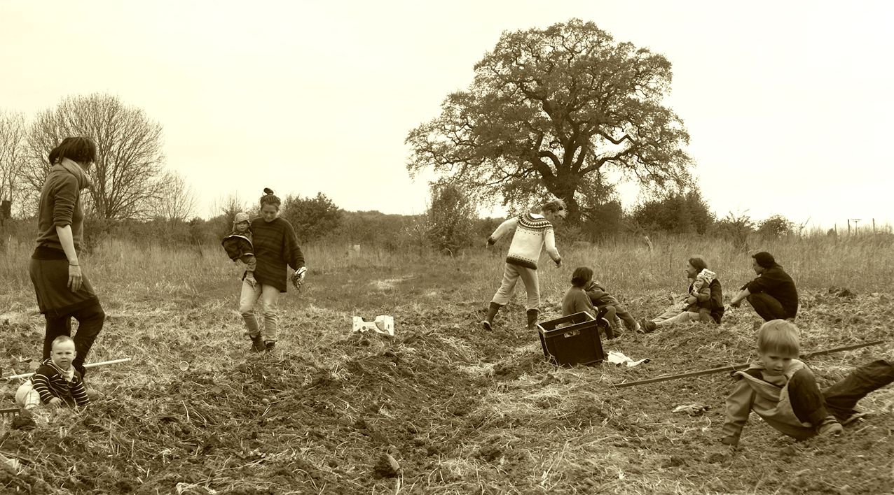

Freiraum

Frühlingsgewühle Gewimmel und fröhliches Lachen auf dem freien Feld unterhalb der uralten Eiche. Dort am Ende des kleinen Dorfes Hohen Büssow ist Freiraum für gemeinsames Gärtnern. Hier beginnen wir mit unserer Lieblingsfeldfrucht – der Kartoffel. An alle Geschmäcker ist gedacht - mehlig oder festkochend. Die Kleinkinder spielen in den mühsam freigeschlagenen Reihen mit den Queckenwurzeln, auch diese sollen essbar sein. Jemand bringt eine Melone, die ist viel süßer und eine willkommene Erfrischung bei der harten Arbeit. Nur noch eine Reihe, dann ist die Hälfte der Saatkartoffeln drin. Was ist bloß los mit diesem Boden? Auch hier war ehemals bester Weizenacker, wie in der Chronik nachzulesen ist. Später hinterließen schwere Landmaschinen und Kunstdünger eine betonähnliche Erdkruste. Doch „Kompost ist das Gold des Gärtners“ und Humus ist nicht nur ein Wort für Kichererbsenpüree. Schon einmal vor drei Jahren versuchte eine fröhliche Runde mit einem bunten Kinder-Garten hier Fuß zu fassen, doch wir geben nicht auf. Wir bauen an. Der Boden soll leben - und nächsten Samstag um 10.00 Uhr treffen wir uns wieder hier. Vielleich könnten die im Tollensetal in der Nässe versinkenden Heugebirge der letzten Jahre zur Wiederbelebung der Grundlage unseres Gemeinschaftsgarten genutzt werden. Dort unten am Fluss befördern sie nur die Nitratanreicherung, die letztendlich selbst das Ostseewasser erreicht.MS